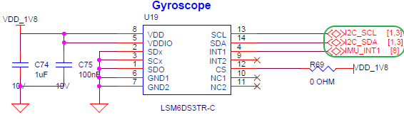
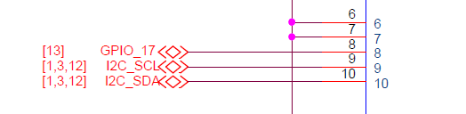
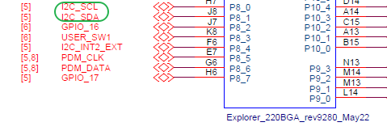

Edgi-Talk_LSM6DS3 示例工程
中文 | English
简介
本示例基于 Edgi-Talk 平台，运行于 RT-Thread 实时操作系统，演示如何驱动 LSM6DS3 六轴传感器 (加速度计 + 陀螺仪 + 温度)。
LSM6DS3TR 简介
LSM6DS3TR 是 STMicroelectronics（意法半导体）推出的一款 低功耗六轴惯性测量单元（IMU），集成了三轴加速度计与三轴陀螺仪。
主要特性
三轴加速度计：±2/±4/±8/±16 g
三轴陀螺仪：±125/±245/±500/±1000/±2000 dps
工作电压：1.71 V ～ 3.6 V
功耗低，支持多种省电模式
内置 FIFO 缓冲（最长 8 KB）
支持 I²C 与 SPI 通信接口
应用场景
智能手机、可穿戴设备
运动检测与姿态识别
手势识别与步态分析
机器人与无人机姿态控制
通过该示例，用户可以学习：
使用 RT-Thread 的 I²C 设备驱动框架
初始化并配置 LSM6DS3 寄存器
读取 三轴加速度、三轴角速度 和 温度数据
将传感器数据通过串口输出
硬件说明
LSM6DS3TR接口

BTB座子

MCU接口

软件说明
工程基于 Edgi-Talk 平台开发。
使用 RT-Thread 作为操作系统内核。
示例功能包括：
检测并验证设备 ID
传感器复位并恢复默认配置
配置输出速率与量程
轮询方式读取加速度、角速度、温度数据
串口打印输出
使用方法
编译与下载
打开工程并完成编译。
使用 板载下载器 (DAP) 将开发板 USB 接口连接至 PC。
通过编程工具将生成的固件烧录至开发板。
运行效果
烧录完成后，开发板上电即可运行示例工程。
Acceleration [mg]: 15.23 -3.12 1000.45
Angular rate [mdps]: 2.50 -1.25 0.75
Temperature [degC]: 26.54
蓝色 LED 将以 500ms 为周期闪烁，表示系统调度正常。
注意事项
如需修改工程的 图形化配置，请使用以下工具打开配置文件：
tools/device-configurator/device-configurator.exe libs/TARGET_APP_KIT_PSE84_EVAL_EPC2/config/design.modus
修改完成后保存配置，并重新生成代码。
启动流程
系统启动顺序如下：
+------------------+
| Secure M33 |
| (安全内核启动) |
+------------------+
|
v
+------------------+
| M33 |
| (非安全核启动) |
+------------------+
|
v
+-------------------+
| M55 |
| (应用处理器启动) |
+-------------------+
⚠️ 请严格按照以上顺序烧写固件，否则系统可能无法正常运行。
若示例工程无法正常运行，建议先编译并烧录 Edgi-Talk_M33_S_Template 工程，确保初始化与核心启动流程正常，再运行本示例。
若要开启 M55，需要在 M33 工程 中打开配置：
RT-Thread Settings --> 硬件 --> select SOC Multi Core Mode --> Enable CM55 Core